رصد و تحلیل فضای سیاسیاجتماعی حوزهی علمیهی خراسان.
ویرایش ۴.۰
سامانه هوشمند جریان/صفحه نخست
بهروزرسانی خودکار هر ۲ ساعت
سامانه هوشمند جریان
سامانه هوشمند جریان، ابزار رصد و تحلیل فضای رسانهای ادارهی رصد و راهبری سیاسیاجتماعی حوزهی علمیهی خراسان است.
این سامانه بهصورت زنده کانالهای عمومی ایتا و تلگرام — اعم از خبرگزاریهای رسمی و شخصیتهای حوزوی — را پایش میکند، پستها را بر اساس دستهبندی موضوعی سازماندهی میکند و با تحلیل آماری، تصویری دقیق و بهروز از گفتمان سیاسیاجتماعی روز ارائه میدهد.
دسترسی به بخشهای سامانه دوسطحی است: مدیر و بیننده، هرکدام با رمز عبور اختصاصی خود.
حذف کانال «»؟
این کار غیرقابلبازگشته — همهی پستهای جمعآوریشده از این منبع هم برای همیشه پاک میشن.
نبض فضای سیاسی اجتماعی در حوزه علمیه خراسان

عرصههای رصد
برای دیدن عرصههایی که میتوانید توسط جریان رصد کنید، اینجا را مشاهده کنید.
بستههای تحلیلی
برای دسترسی به بستههای تحلیلی تولیدشده توسط جریان، اینجا را مشاهده کنید.
رصد لحظهای
اخبار رسمی، کنشگری مجازی، مدارس و افراد را در یک سامانهی واحد و بهروز دنبال میکنیم. هر عرصه با روش پایش مخصوص به خودش رصد میشود تا هیچ تحولی در فضای سیاسیاجتماعی از دید جریان دور نماند.
تحلیل تخصصی
با نگاه جامعهشناسی سیاسی، رویدادها را از دل دادهها استخراج و تحلیل میکنیم. حاصل این تحلیل در قالب بستهی تحلیلی جریان، هر شماره در اختیار مخاطب قرار میگیرد.
دسترسی اختصاصی
با سطحبندی دقیق نقشها، اطلاعات حساس فقط در اختیار افراد مجاز قرار میگیرد. مدیران و بینندگان هرکدام دسترسی متناسب با نیاز خود را دارند، بدون افشای دادههای حساس.
عرصههای رصد و تحلیل
اخبار رسمی
کنشگری مجازی
برنامه مدارس
افراد و مجموعهها
جریان این چهار عرصه را بهصورت جداگانه رصد و تحلیل میکند: اخبار رسمی خبرگزاریها، کنشگری فضای مجازی، برنامههای آموزشی مدارس و فعالیت افراد و مجموعههای تأثیرگذار. هر عرصه با منبع داده و روش پایش مخصوص به خودش دنبال میشود.
بسته تحلیلی جریان، خلاصهای تحلیلی، دقیق و چندلایه از تحولات سیاسیاجتماعی است که سعی دارد نگاهی جامع را در اختیار مخاطب قرار دهد. این بسته شامل ۱۰ بخش است.
خط خبری
تحلیل اخبار روز
مهمترین اخبار
نگاه جامعهشناسی سیاسی
اصل ماجرا
تحلیل سازمانها
یادداشت طلاب
خارج از دید
نبض افکار
تحلیل اندیشگدهها
آخرین شمارههای منتشرشده
اطلاع از انتشار بسته تحلیلی جریان
شماره موبایل خود را ثبت کنید تا هر وقت شمارهی جدید «بسته تحلیلی جریان» منتشر شد، پیامک اطلاعرسانی برایتان ارسال شود.
ضمیمه جریان
محتوای تکمیلی برای تعمیق عرصههای رصد و تحلیل
برای بهتر شدن بستههای جریان به ما کمک کنید
نظر یا پیشنهاد خود را با ما در میان بگذارید.
اخبار رسمی
اخبار سیاسی و اجتماعی از خبرگزاریها، ایتا و تلگرام
جستجوی هوشمند
بازه زمانی
همه رسانهها
انتخاب رسانهها…
هنوز خبری از منابع خبری جمعآوری نشده.
روزنامهها
صفحهی اول روزنامههای امروز
انتخاب روزنامهها…
هنوز روزنامهای دریافت نشده.
هنوز گزارشی بارگذاری نشده.
بارگذاری گزارش جدید
افراد
همهی سمت/تخصص/عرصه
نام
کد ملی
سمت/تخصص/عرصه
شهر
اهمیت
تشکل/مجموعه
فردی ثبت نشده.
افزودن فرد
انتخاب سمت/تخصص/عرصه…
بارگذاری گروهی از اکسل
ترتیب ستونهای اکسل باید دقیقاً این باشد (ردیف اول = سرستون، خودش نادیده گرفته میشود): نام | کد ملی | شهر | سمت/تخصص/عرصه | اهمیت | تشکل/مجموعه | یادداشت. چون این ستون چندانتخابیه، میتونید چند مقدار رو با ویرگول یا اسلش جدا از هم توی همون سلول بنویسید (مثلاً «طلبه، فعال دانشجویی»)؛ هر مقداری که با موارد زیر یکی نباشه نادیده گرفته میشه، و اگه هیچکدوم مچ نشه بهصورت خودکار «سایر» ثبت میشود.
مدیریت سمت/تخصص/عرصه
اساتید سیاسیاجتماعی
همهی حوزههای تخصصی
نام
کد ملی
دانشگاه/حوزه
حوزهی تخصصی
مرتبه
شهر
اهمیت
استادی ثبت نشده.
افزودن استاد
انتخاب حوزههای تخصصی…
بارگذاری گروهی از اکسل
ترتیب ستونهای اکسل باید دقیقاً این باشد (ردیف اول = سرستون، خودش نادیده گرفته میشود): نام | کد ملی | شهر | دانشگاه/حوزه | حوزهی تخصصی | مرتبه | اهمیت | یادداشت. چون حوزهی تخصصی چندانتخابیه، میتونید چند مقدار رو با ویرگول یا اسلش جدا از هم توی همون سلول بنویسید. مقدار ستون «مرتبه» (تکمقداره) باید دقیقاً با یکی از مقادیر موجود یکی باشد؛ در غیر این صورت (یا اگه هیچ حوزهی تخصصی مچ نشه) بهصورت خودکار «سایر» ثبت میشود.
مدیریت حوزههای تخصصی
مدیریت مرتبهها
تفکیک فعالان بر اساس سمت
تفکیک اساتید بر اساس حوزهی تخصصی
بخش تحلیلی
هنوز مجلهای بارگذاری نشده.
بارگذاری مجلهی جدید
ضمیمه جریان
هنوز موردی در آرشیو بارگذاری نشده.
بارگذاری تولید تحلیلی جدید
هنوز بستهی آموزشیای بارگذاری نشده.
بارگذاری بستهی آموزشی جدید
همهی کانالها و مدیران آنها
انتخاب کانالها…
جستجوی هوشمند
پستی با این فیلتر پیدا نشد.
خلاصهی امروز
روایتهای پرتکرار امروز
پست امروز
۰
میانگین روزانه
۰
کانال پرفعالیت
—
تعداد پست به ازای کانال (۶ کانال برتر)
کلمات پرتکرار هفته
در انتظار توسعه. نمونهی زیر برای تصمیمگیری دربارهی نمایش خلاصه، دستهبندی و تحلیل احساسات است.
خروجی پستها
خروجی گزارش آنالیز
مشترکین اطلاعرسانی بسته جریان
شمارههای زیر از فرم «اطلاع از انتشار» در صفحهی ورود ثبت شدهاند. هر وقت شمارهی جدید منتشر شد، لیست را خروجی بگیرید و از سامانهی پیامکی خودتان ارسال کنید؛ بعد از ارسال، دکمهی «علامتگذاری» را بزنید تا خروجی بعدی فقط شمارههای جدید را نشان دهد.